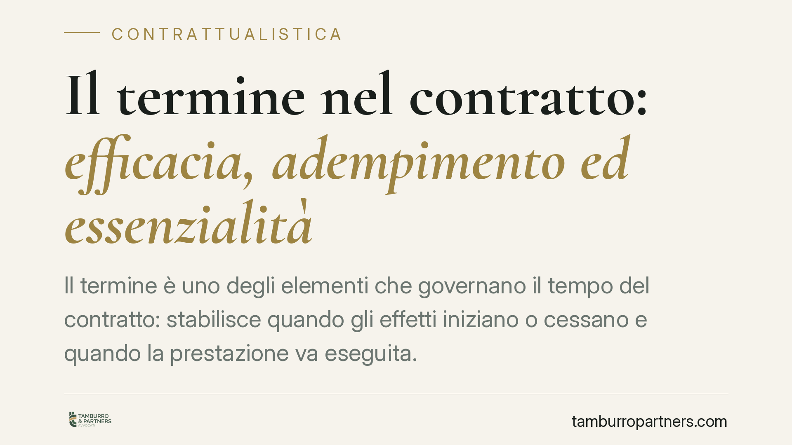

Il termine nel contratto: efficacia, adempimento ed essenzialità
Il termine è uno degli elementi che governano il tempo del contratto: stabilisce quando gli effetti iniziano o cessano e quando la prestazione va eseguita. Distinguere il termine di efficacia da quello di adempimento è decisivo, perché incide su mora, penali e risoluzione. Vediamo cosa dice il codice civile e come impostare correttamente la clausola.

Che cos'è il termine
Il termine è l'evento futuro e certo che le parti collegano al contratto per fissarne la dimensione temporale. A differenza della condizione, che riguarda un evento incerto, il termine è destinato ad accadere: ciò che può variare è, al più, il quando (termine incerto: "alla morte di Tizio").
Sul piano funzionale occorre distinguere due figure che spesso vengono confuse, con conseguenze pratiche rilevanti.
Termine di efficacia e termine di adempimento
Il termine di efficacia individua il momento in cui gli effetti del contratto iniziano a prodursi (termine iniziale) o cessano (termine finale). Prima del termine iniziale il contratto esiste ma non produce effetti; con il termine finale gli effetti si esauriscono. Un esempio normativo è l'art. 979 c.c., che fissa la durata massima dell'usufrutto a favore di una persona giuridica in trent'anni: qui il termine finale è imposto dalla legge e delimita la vita del diritto.
Il termine di adempimento riguarda invece il momento in cui la prestazione deve essere eseguita. Non incide sull'efficacia del contratto, ma sulla scadenza dell'obbligazione. La disciplina base è l'art. 1183 c.c.: se il tempo non è determinato, la prestazione può essere esigita immediatamente; quando per la natura della prestazione o per gli usi è necessario un termine, questo è fissato dal giudice in mancanza di accordo. Il termine di norma si presume a favore del debitore, salvo che risulti stabilito a favore del creditore o di entrambi.
La distinzione conta perché condiziona la mora del debitore, l'esigibilità del credito e l'applicazione di eventuali penali. Un ritardo su un termine di adempimento non è la stessa cosa della cessazione degli effetti legata a un termine finale di efficacia.
Il termine essenziale
Quando il rispetto della scadenza è determinante per l'interesse del creditore, il termine è essenziale. L'art. 1457 c.c. prevede che, scaduto il termine essenziale senza esecuzione, il contratto si intende risolto di diritto, salvo che il creditore, entro tre giorni, comunichi alla controparte di volerne comunque esigere l'esecuzione.
L'essenzialità può essere espressa (pattuita in clausola) o desumersi dalla natura del contratto e dallo scopo perseguito. Non basta l'uso di formule enfatiche come "tassativo" o "improrogabile": occorre che l'inutilità della prestazione tardiva emerga in modo univoco. Su questo punto la Corte di Cassazione ha da tempo consolidato un orientamento rigoroso, richiedendo un accertamento in concreto dell'interesse del creditore e non una qualificazione meramente formale.
Il computo dei termini
Per i termini di adempimento vale l'art. 1187 c.c., che rinvia alle regole sul computo dei termini di prescrizione (artt. 2963 c.c.): non si conta il giorno iniziale, il termine scade con lo spirare dell'ultimo giorno e, se cade in un giorno festivo, è prorogato al primo giorno successivo non festivo. Sono regole apparentemente marginali che, nei contratti con penali giornaliere o con scadenze incrociate, producono effetti economici concreti.
Implicazioni pratiche
La qualificazione del termine incide direttamente sui rimedi disponibili. Un termine di adempimento non essenziale consente al creditore di pretendere ancora la prestazione e di far valere il ritardo tramite gli ordinari strumenti sulla mora; un termine essenziale apre invece alla risoluzione di diritto, con l'onere di attivarsi tempestivamente per conservare il contratto.
Sul piano redazionale, l'errore più frequente è trattare come equivalenti clausole che regolano l'efficacia e clausole che regolano la scadenza della prestazione. Da qui contenziosi evitabili su quale rimedio spetti e da quando.
Cosa fare in concreto
- Qualifica il termine: chiarisci in ogni clausola se stai regolando l'efficacia del contratto o la scadenza della prestazione.
- Decidi l'essenzialità in modo esplicito: se il rispetto della data è vitale, richiama l'art. 1457 c.c. e motiva perché la prestazione tardiva sarebbe inutile.
- Coordina termine e mora: verifica se serve la costituzione in mora o se il termine opera in automatico, e allinea le eventuali penali.
- Definisci il computo: indica se i termini sono in giorni di calendario o lavorativi e come gestire le scadenze in giorni festivi.
- Rivedi i modelli in uso: è opportuno controllare i format contrattuali standard per eliminare formule ambigue tra efficacia e adempimento.
Una clausola sul termine ben costruita riduce i margini di controversia e rende prevedibili i rimedi in caso di ritardo.
---
Contributo informativo a cura di Tamburro & Partners Avvocati - Avv. Giuseppe Tamburro. Non costituisce parere legale.
Ogni contratto ha il suo equilibrio.
Se vuoi una revisione delle clausole o una redazione su misura, scrivi allo studio. Ti rispondiamo entro un giorno lavorativo.